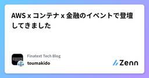
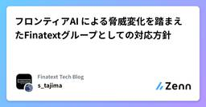
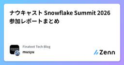
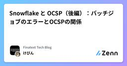
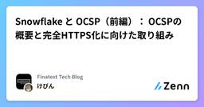

Finatext Tech Blogのフィード
https://zenn.dev/p/finatext
『金融を"サービス"として再発明する』Finatextグループのテックブログです。
フィード

AWS x コンテナ x 金融のイベントで登壇してきました
Finatext Tech Blogのフィード
はじめにこんにちは、Finatextでエンジニアをしているtoumakidoです。こちらのイベントに参加、登壇してきたので、振り返りと登壇の準備をする上で新しく得た技術的な知見を共有したいと思います。 イベントについて今回参加したイベントは「JAWS-UG Fin-JAWS × コンテナ支部 金融コンテナ大全 〜ビジネスから技術まで〜」というタイトルで、Fin-JAWSというコミュニティが運営してくださいました。Fin-JAWSは金融事業に関わる方などに向けたAWSユーザーグループで今回が43回目の開催でした。今回のテーマは金融xコンテナで、どちらかに絡んでいればOKと...
4時間前

フロンティアAI による脅威変化を踏まえたFinatextグループとしての対応方針 2
2
Finatext Tech Blogのフィード
背景昨今、Claude Mythos や GPT-5.5-Cyber を代表とするようなサイバーセキュリティに特化した高性能なAIモデルが登場し、各組織ではその対応が求められています。Anthropic は、Claude Mythosそのものは限定的な公開としているものの、同等クラスのモデルを数週間以内に全顧客に提供する見込みを示しています。https://www.anthropic.com/news/claude-opus-4-8こういった状況を加味し、金融庁と日本銀行は、連名で「フロンティアAIによる脅威変化を踏まえた金融機関等の短期的な対応」に係る要請を出しています。...
3日前

ナウキャスト Snowflake Summit 2026 参加レポートまとめ
Finatext Tech Blogのフィード
2026年6月1日から4日の4日間、サンフランシスコで開催されるSnowflake Summit 2026にナウキャストのメンバーが参加します。今年もメンバーが参加したセッションのレポートを毎日公開予定です。公開次第この記事にリンクを追加していきますので、ぜひチェックしてください！また、現地の様子はXで #SnowflakeSummit のハッシュタグでも発信しています。あわせてご覧ください。昨年のまとめ記事は以下になります。https://zenn.dev/finatext/articles/snowflake-summit-2025-summary-nowcast!この記...
5日前

Snowflake と OCSP（後編）：バッチジョブのエラーとOCSPの関係
Finatext Tech Blogのフィード
はじめにこんにちは！ナウキャストのデータエンジニアのけびんです。AWS の Private Subnet で dbt コマンドを実行するバッチ処理を取り扱うことはよくあると思います。Snowflake への接続は基本的に HTTPS 化されていますが、security group で 443 番ポートしか開けていない場合、 80番ポートを使用する OCSP というプロトコルの通信がうまくいきません。これに起因して一見すると無関係なさまざまな課題が発生しました。今回「Snowflake と OCSP」と題し、前編：OCSPの概要と完全HTTPS化に向けた取り組み後編：バッチ...
7日前

Snowflake と OCSP（前編）： OCSPの概要と完全HTTPS化に向けた取り組み
Finatext Tech Blogのフィード
はじめにこんにちは！ナウキャストのデータエンジニアのけびんです。AWS の Private Subnet で dbt コマンドを実行するバッチ処理を取り扱うことはよくあると思います。Snowflake への接続は基本的に HTTPS 化されていますが、security group で 443 番ポートしか開けていない場合、 80番ポートを使用する OCSP というプロトコルの通信がうまくいきません。これに起因して一見すると無関係なさまざまな課題が発生しました。今回「Snowflake と OCSP」と題し、前編：OCSPの概要と完全HTTPS化に向けた取り組み後編：バッチ...
7日前

既存サービスにMCPサーバーを組み込む際の設計ポイント
Finatext Tech Blogのフィード
はじめにFinatextのInsurtech事業でインターンをしている保坂です！昨年6月からインターンをしており、生成AI活用機能やバックエンド開発に携わっています。今回、保険ビジネスプラットフォーム『Inspire』にMCPを統合する機能開発を担当しました。これといったスタンダードのない新しい領域であるため、今回の実装を紹介し、MCP実装の設計をする上で考えるべき点をまとめていきます。 MCPの概要そもそもMCPとは、ChatGPTなどのLLMがシステムの機能を呼び出せるようにする、専用窓口のようなものです。よくUSB-Cと例えられることもあります。https://...
11日前
Snowflake-managed MCP ServerのOAuth認証への理解と権限設計
Finatext Tech Blogのフィード
はじめにこんにちは。ナウキャストでエンジニアをしているTakumiです。ここ最近，Snowflake-managed MCPを安全に使うには何が必要かを整理していました。接続は MCP Client（ローカルPC）→ MCP Server → Snowflake という経路になるので，"SnowflakeのAI機能を使ってデータ分析を行うときのロール構成をまとめる"のときと同様，権限の設計を誤ると本来見えてはいけないデータが参照される（≒情報漏洩）リスクがあります。そのうえで，次の2つは切り分けて押さえておく必要があります。認証（Authentication） … MC...
14日前
Gobra による複数粒度ロック証明への挑戦
Finatext Tech Blogのフィード
背景Finatext でバックエンドエンジニアをしている太宰です。普段は「BaaS (Brokerage as a Service)」という証券ビジネスプラットフォームを開発しています。半年ほど前に結成された Enabling Team の一環として「自動推論」技術について調査・検証を行っています。これまでの詳しい経緯などは 自動推論シリーズスタート：Gobraでできること を読んでいただければと思います。 この記事で扱うことこの記事では Gobra を用いて複数粒度ロック (Multiple granularity locking) についての証明を試みたので、その内容...
19日前
「ここだけの話」を供養する夜 ─ ナウキャスト・DATUM STUDIO・ちゅらデータ 3社合同LT会レポート
Finatext Tech Blogのフィード
はじめにデータ・AI 系のコミュニティイベントは世の中に数多くあります。一方で「パブリックだと成功事例ばかりで試行錯誤や失敗談は赤裸々に話しにくい」「20 分枠だと準備が大変すぎる」という声もよく耳にします。そんな声を受けて 2026 年 4 月 24 日（金）、ナウキャスト・DATUM STUDIO・ちゅらデータの 3 社合同でクローズドな LT 会を開催しました。テーマは失敗談の供養。Web の記事や登壇スライドには書けないような「ここだけの話」を、安心してぶつけ合える場を作ろう、というコンセプトです。今回のイベントを企画していた羽入さんは残念ながら当日は諸事情で参加でき...
21日前
AIに会社のGoogleアカウントを渡していませんか
Finatext Tech Blogのフィード
1. Google MCPを接続したときに起きることたとえば、来週のチーム進捗会議のアジェンダを AI に作ってもらおうとして、「最近の社内ドキュメントから議題を整理して」と頼んだとします。返ってきたアジェンダの中に、なぜか「来月から A さんが家庭の事情で退職予定」という項目が紛れ込んでいる👉AI は、自分のドライブに置いてあったメンバーとの 1on1 メモまで読みに行っていた——という事故が、方法論として成立し得ます。AIエージェントを Google Workspace に接続するとき、ユーザの見れる範囲をAIにそのまま見せるというのは一見適切なように見えて、こういった不慮の...
1ヶ月前
LightdashのCI/CDをGitHub Actions+AWS CodeBuildで構築した話
Finatext Tech Blogのフィード
はじめにこんにちは、ナウキャストでデータエンジニアをしているh-miyazawaです。主に金融機関向けに、Snowflakeを活用したデータ基盤構築やデータの可視化を支援しており、とあるプロジェクトでBIツールとしてLightdashを利用しています。前回はLightdashのテーブルチャートのTipsを紹介しました。https://zenn.dev/finatext/articles/lightdash-table-chart-tipsその際、Lightdashの導入に合わせてCI/CDパイプラインも構築したのですが、後述の問題がありいくつか工夫が必要だったので、今回はそ...
1ヶ月前
SA Night #3 ～SAの生存戦略：生成AIは「設計」の何を変えるのか～ イベントレポート
Finatext Tech Blogのフィード
株式会社Finatextの技術広報 兼 エンジニアの五十嵐です！本日は2026年3月31日に開催した勉強会「SA Night #3 ～SAの生存戦略：生成AIは「設計」の何を変えるのか～」のイベントレポートをお届けします！ SA Night #3 ～SAの生存戦略：生成AIは「設計」の何を変えるのか～SA Nightは、ソリューションアーキテクト（SA）について語る勉強会です。2019年の#1では「SAって何をやっているの？」、#2では企業ごとに異なるSAの業務内容や技術的チャレンジにフォーカスしてきました。今回の#3では「生成AIは『設計』の何を変えるのか」をテーマに、AWS J...
1ヶ月前
そのAIアプリはテストされているか
Finatext Tech Blogのフィード
AIアプリを本番提供するということこんにちは、ナウキャストでソフトウェアエンジニア・データサイエンティストをやっている隅田です。直近ではDataLens店舗開発というwebアプリケーションの開発をメインで行っています。このプロダクトのコア機能は、pdfや画像などの非構造化データからの物件情報の抽出です。AIによる業務効率化ツールは人間による承認フローが入ることが多いですが、本プロダクトは精度を十分に高められており、これまで人手で行ってきた物件情報の整理という作業を完全にAIで自動化しています（特許も取得しました）。ところで、本プロダクトはリリースから1年以上の時が経っています。継...
1ヶ月前
技術書典20 オフライン出展レポート
Finatext Tech Blogのフィード
株式会社Finatextの技術広報 兼 エンジニアの五十嵐です！2026年4月12日（日）に池袋・サンシャインシティ 展示ホールDで開催された「技術書典20」のオフライン会場に、Finatextホールディングスとして初出展してきました！当日の様子をレポートします！ 技術書典とは？技術書典は、ソフトウェア・ハードウェア・数学・デザインなど幅広いジャンルの技術書が集まる、日本最大級の技術同人誌即売会です。2016年の初開催から回を重ね、今回で20回目の開催となりました。https://techbookfest.org/ なぜ出展したのかFintech業界というと「レガシー」「...
2ヶ月前
2026年4月6日開催｜DataOps Night#10 イベントレポート
Finatext Tech Blogのフィード
こんにちは！Finatextホールディングス/ナウキャスト 広報担当の及川です！2026年4月6日、ナウキャスト主催の勉強会「DataOps Night#10」を開催しました。記念すべき第10回目となる今回のテーマは、「エンタープライズAIエージェントを支える技術」です。昨今のAIブームを背景に、現地・オンライン合わせて217名もの方にお申し込みいただき、会場にも多くの方が足を運んでくださいました。当日は、ナウキャストの六車のほか、サイバーエージェントの山田さん、LayerXの澁井さんをお迎えし、最新の知見を共有いただきました。 発表内容 １．「MCPゲートウェイ MCPa...
2ヶ月前
Snowflake Trust CenterでCIS Benchmarksに基づくアカウントセキュリティを継続監視する
Finatext Tech Blogのフィード
はじめにこんにちは。ナウキャストでデータエンジニアをしている島尻です。Snowflakeアカウントのセキュリティ設計を考える際、ネットワークポリシー、認証設計、権限の最小化などはよく議論されるかと思います。ただ、その設計に沿った実装が運用フェーズでも問題なく機能しているかについては、継続的に監視していく仕組みが必要です。例えば、しばらくログインがないユーザーの棚卸しや、ネットワークポリシーが当初の設計から変更されていないかのチェックなどです。SnowflakeにはTrust Centerというセキュリティ監視機能が組み込まれており、Center for Internet S...
2ヶ月前
Agentic AIをサービスに組み込む時に考えるべき認可の話
Finatext Tech Blogのフィード
はじめにFinatextのInsuretech事業でエンジニアをしている今中（@koki_imanaka）です。バックエンド開発を中心に担当しつつ、兼務で認証認可のEnabling Teamにも所属しており、認証認可の基盤づくりに関わっています。去年から保険基幹プラットフォーム「Inspire」にAgentic AIの組み込みを進めており、この記事では実際にAgentic AIをプロダクトに組み込むうえでのセキュリティリスクと、それに対するOAuth標準仕様ベースのアプローチについて、実際の検討過程を交えながら整理します。 LLMの認証認可についてMCP（Model Con...
2ヶ月前
Snowflake Performance 最適化入門【Tech Fast Track 登壇】
Finatext Tech Blogのフィード
はじめにこんにちは！Finatext で VP of Data & AI をしてます、けびんです！先日、Snowflake社主催のイベント「Snowflake Tech Fast Track 2026」 に登壇しました。https://www.snowflake.com/snowflake-tech-fast-track/午前中に行われた Data for Breakfast と同じ会場で開催されたこちらのイベントでは、データエンジニアリング トラックデータウェアハウス トラックAI & コラボレーション トラックの３つのトラックに分かれ、各分野の...
2ヶ月前
自動推論シリーズスタート：Gobraでできること
Finatext Tech Blogのフィード
背景Finatextでバックエンドエンジニアをしているデニスです。普段は「Inspire」という保険ビジネスプラットフォームを開発していますが、半年ほど前に、様々なEnabling Teamが新しく結成されました。Enabling Teamというのは、「今のプロダクト開発の直線的なマイルストーンには乗らない技術を検証し、習得したりノウハウを溜めた上で、これを実プロダクト・実環境に導入するサポートをおこなう」チームのことです。中でも私はInsurtechチームの代表として、「自動推論」チームに携わっています。自動推論チームは、社内で開発している証券サービス、貸金サービス、保険サービ...
2ヶ月前
2026年3月3日開催｜DataOps Night特別編 イベントレポート
Finatext Tech Blogのフィード
こんにちは！Finatextホールディングス/ナウキャスト 広報担当の及川です！本日は2026年3月3日開催した勉強会「DataOps Night特別編」のイベントレポートをお届けします！ 「DataOps Night特別編~Snowflake Data Superheroesが登壇~」を開催しました！2026年2月に「Snowflake Data Superheroes」が発表されました。全世界でわずか125名、日本国内からは15名のみが選出。その1人として、ナウキャストのデータエンジニア 大野 巧作（Kevin）が選ばれました！これを記念し、弊社主催の勉強会「DataOp...
2ヶ月前